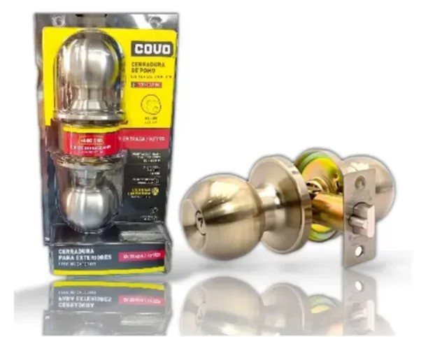
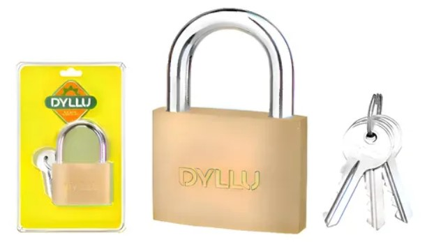
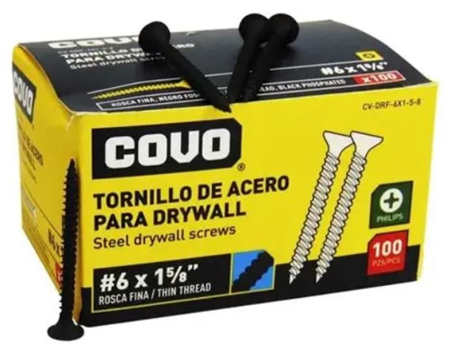
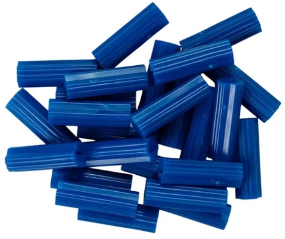
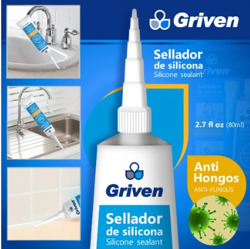
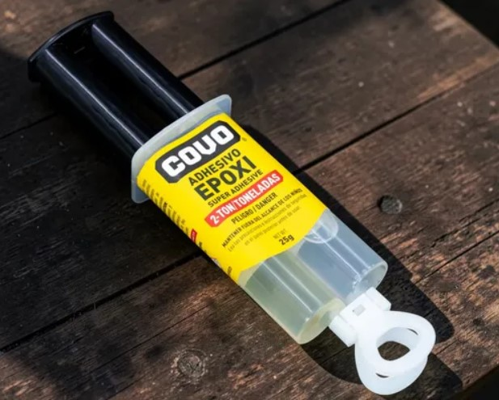
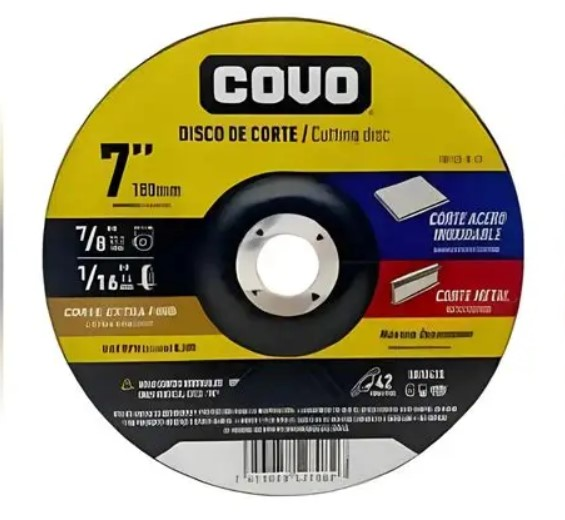
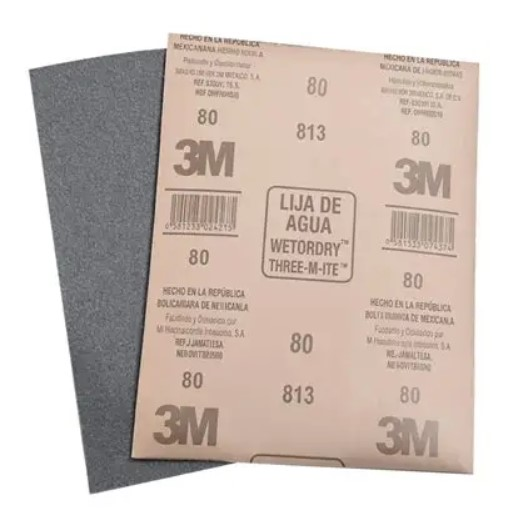

Cerradura de pomo cilíndrica para puerta COVO
Cerradura de pomo cilíndrica para puerta COVO
Mecanismo básico de seguridad y apertura para puertas interiores o de habitaciones.
Organice su Ferretería : Compre Accesorios y Suministros Generales

Mecanismo básico de seguridad y apertura para puertas interiores o de habitaciones.

Candado portátil de seguridad con arco de acero endurecido para rejas, portones y depósitos.

Tornillo de alta rotación para láminas de yeso, madera y perfiles metálicos delgados.

Taco de anclaje que permite fijar tornillos de forma firme en paredes de bloque o concreto.

Sellador elástico resistente a la humedad usado en juntas de vidrios, lavamanos, fregaderos y ventanas.

Adhesivo estructural de alta resistencia para reparar piezas metálicas, plásticas o cerámicas.

Consumible de alta rotación para esmeril angular utilizado en cortes limpios de hierro y acero.

Material abrasivo flexible para desbastar, alisar y preparar superficies de madera, metal o masilla antes de pintar.